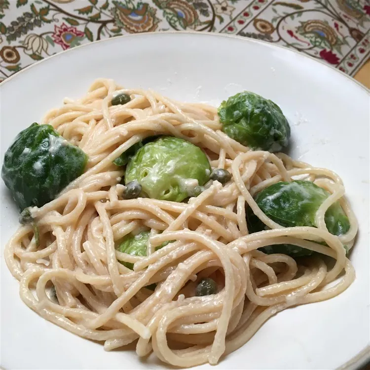

Brussles Sprout Spaghetti

Description
A delicious and healthy fall comfort food. This dish is vegan and my meat-eating wife loved it!
Ingredients
- 1 pound brussel sprouts
- 1/2 package spaghetti
- 1 tbs[] olive oil
- 2 cloves garlic
- 1 lemon
- 3 tbsp tahini paste
- 2 tsp capers
- salt and black ground pepper
Steps
- Place a steamer insert into a saucepan and fill with water to just below the bottom of the steamer. Bring water to a boil. Add Brussels sprouts, cover, and steam until fork tender, about 10 minutes. Drain, reserving the hot water.
- Bring a large pot of lightly salted water to a boil. Cook spaghetti in the boiling water, stirring occasionally until tender yet firm to the bite, about 12 minutes. Drain.
- Heat olive oil in a pot over medium heat. Add garlic; cook and stir until fragrant, 1 to 2 minutes. Mix in lemon juice; add tahini paste. Stir in reserved hot water until mixture is the consistency of sauce.
- Stir Brussels sprouts, spaghetti, and capers into the sauce. Season with salt and pepper.